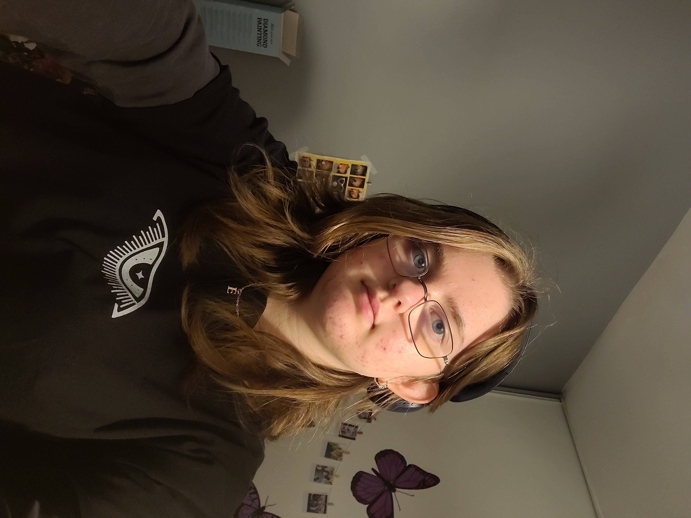

Je suis élève de Seconde au lycée La Salle, à Lille et je suis passionnée par la littérature française comme étrangère et l'art en général.
J'ai pris part au Concours d'Ecriture Collégiens organisé par la villa départementale Marguerite Yourcenar proposé au Nord de la France.
J'ai eu l'opportunité d'être formée aux premiers secours par l'intermédiaire du collège Dominique Savio.
Avec des amis, nous avons pris l'initative de créer un club lecture au collège avec notre professeure documentaliste.
Durant mes quatre années de collège, j'ai aidé durant les événements que l'APEL a préparé, notamment l'emballage des cookies que nous avions vendus pour financer des voyages mais aussi la distribution des colis de fournitures scolaires.
Collège Dominique Savio - Lambersart
Depuis novembre 2024 : Club lecture à la librairie Au Temps Lire, avenue de Dunkerque à Lambersart.
Depuis septembre 2022 : Cours de théâtre (Théâtre de la Mandarine) comprenant une représentation annuelle.
Lecture variée (science fiction, héroïque fantasie, fantastique, romans pour adolescents...).
Ecriture de courtes histoires.
De 2013 à 2025 : Pratique des arts du cirque au CRAC (Centre Régional des Arts du Cirque) de Lomme.
Musique : éveil musical quand j'étais petite, puis chorale et un an de violon (Ecole de Musique de Lomme).